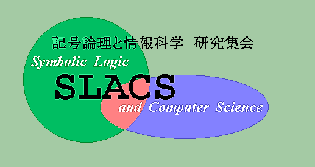

（SLACSのホームページ）
第22回 「記号論理学と情報科学」(SLACS 2005)
2005年９月１日（木）〜９月２日（金）
東京工業大学 大岡山キャンパス
西８号館E棟10階E1001号室（情報理工学研究科大会議室）
講演プログラム
SLACS2005は終了いたしました。 皆様どうもありがとうございました。
2005年幹事：鹿島亮（東京工業大学）kashima@is.titech.ac.jp
2005年9月12日更新